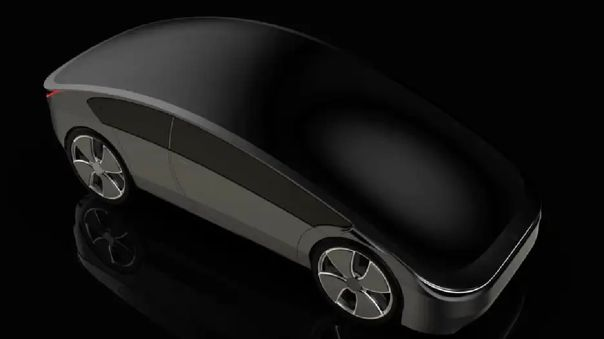

Iniciar Sesión
DIANA ARACELY SUCLUPE GÁLVEZ
Mi Web Personal
Inicio
Curriculum
Proyectos
Contactos
ECONOMÍA
Hectáreas sembradas de arroz se redujeron en 3.8 %
La falta de fertilizante ya advertía un impacto en la producción de arroz, problema que terminó siendo confirmado por el mismo Ministerio de Desarrollo Agrario y Riego. Su vocera Carolina Ramírez, directora de Estudios Económicos, reveló que el área sembrada de este cereal disminuyó en 3.8 %, a poco de concluir la campaña de siembra 2021-2022 a nivel nacional.
La funcionaria explicó que en el país hay ocho principales productos que se cultivan, los cuales son: arroz, papa, maíz amarillo duro, maíz amiláceo, maíz choclo, cebolla y frijol. Todo ello representa 1 millón 170 mil hectáreas de cultivo, 0.2 % menos con respecto al promedio de las últimas cinco campañas.
¿Cuánto se dejó de sembrar?
Carolina Ramírez explicó que, de este 0.2 %, la reducción en la siembra de arroz tuvo mayor incidencia. “En promedio los principales productos tienen un avance de siembra de 82.2 %, en el caso del arroz, se advierte una caída de 3.8 %”, refirió a Diario Gestión.
La costa peruana con grandes carencias
La directora de Estudios Económicos advirtió que la zona costera del país, donde se concentran las grandes producciones de arroz, el cultivo se contrajo en un 9.3 %. Esto se debe a que el costo de los insumos como los fertilizantes, se incrementó, a esto se le une los cambios de climas. “Usualmente hay retrasos en las campañas de arroz, pero se solían recuperar en marzo, lo que no ha ocurrido”, precisó.
El clima factor en contra
La presencia del fenómeno La Niña ha originado condiciones desfavorables para el desarrollo de los plantíos pues el frío retrasa la floración en los valles arroceros, según confirmó Glicerio Canchari, experto en agrometeorología del Senamhi.
Situación de otros cultivos
La funcionaria indicó que cultivos como la papa se incrementaron, en el caso de este tubérculo hubo un alza de 2.6 %, si se compara a la campaña anterior. En cuanto al maíz, se observó una ligera recuperación del 0.7 %.
TECNOLOGÍA
Apple patenta un sistema de realidad virtual para un auto ‘sin ventanas'

El tan rumoreado Apple Car puede no llevar ventanas y conducirse completamente de forma autónoma.
Es un hecho que Apple está trabajando en un vehículo, pese a que no lo ha anunciado oficialmente. Tiene marcas registradas, ejecutivos de otras empresas de autos han llegado a la compañía y patentes han sido oficializadas con este fin.
Pero por fin podríamos tener una pista de cómo se vería el llamado ya Apple Car.
Dejando de lado los rumores, Apple ha patentado ante la Oficina de Patentes y Marcas de Estados Unidos un sistema de realidad virtual para un ‘auto sin o con pocas ventanas’.
¿Así se verá el Apple Car?
Se espera que el automóvil tenga capacidad total de conducción autónoma y se rumorea que funcionaría exactamente como lo hace un iPhone de Apple. Con la ayuda del asistente de voz, Siri,
el automóvil también podría estacionarse en un lugar específico.
Algunas patentes que ha adquirido la empresa de tecnología indican que Apple podría ocultar el volante del automóvil y solo emergería en caso de emergencia.
Recientemente, Apple contrató al veterano ejecutivo de Ford, Desi Ujkashevic, para supervisar el desarrollo del automóvil. Los informes también sugieren que Apple ha colaborado con una empresa subcontratada de montaje
y prueba de semiconductores (OSAT) de Corea del Sur para construir la tecnología de piloto automático del automóvil.
A través del sistema de entretenimiento de realidad virtual en el automóvil, los pasajeros podrán sumergirse por completo en sus experiencias basadas en la ubicación en los auriculares. El contenido de realidad virtual
está destinado a sincronizarse con el movimiento y la aceleración del Apple Car y se basará en el viaje del pasajero.
La razón por la que Apple Car podría no tendrá ventanas es para reducir el mareo por movimiento y los pasajeros podrían tener una experiencia similar a la de una ventana a través de sus auriculares VR que accederían a las
cámaras instaladas en el exterior del automóvil.
Se espera que el automóvil se lance en 2025, pero Apple aún no lo ha confirmado.